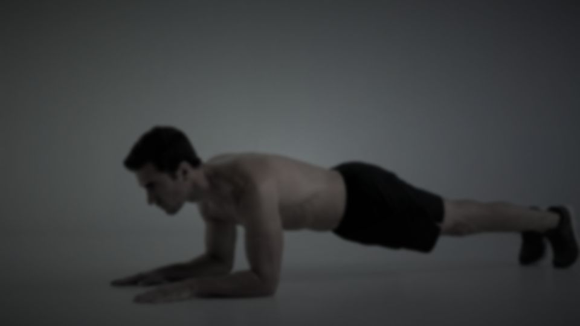

How to Do Your First Real Push-Up (A 4-Week Plan)
Can't do one push-up yet? A 4-week plan for push-ups for beginners: a ladder of household surfaces, slow negatives, form fixes and when to move on.


TL;DR
- You can't do a push-up yet mostly because a floor push-up asks your arms to move about two-thirds of your body weight.
- Raise your hands to make it lighter: wall, counter, table, sofa seat, stair, floor. Start on the lowest one where you can do 8 clean reps.
- Train 3 days a week: incline sets, slow 3–5 second negatives and short plank holds.
- Move down a rung only when every set is clean. Repeating a week is normal.
- Your first floor rep counts if the line holds. Build singles into sets, then switch to a daily number.
You get into position on the living room floor. Arms straight, feet back, very serious face.
You lower about two inches. Then your elbows give, your chest meets the rug, and you lie there for a second deciding whether anyone saw.
Nobody did. And nothing is wrong with you. A floor push-up asks your arms and shoulders to move roughly two-thirds of your body weight, and most people who skip straight to it are trying to lift more than they're ready for.
This is a plan for push-ups for beginners who are at zero. You start on a surface that makes the push-up light enough to do well, then move lower, step by step, until the floor is the next step. Most of the work happens in three short sessions a week, about 15 minutes each.
Why you can't do a push-up yet
It's mostly load. In a 2011 force-plate study of 23 recreationally fit adults, a standard push-up put roughly 64% of body mass through the hands. Put your hands up on a box about 61 cm (2 feet) high and that dropped to around 41%. A knee push-up came in around 49%.
A second small study found the load isn't even across the rep. At the bottom of a full push-up, people held about 75% of their body mass; at the top, about 69%. That's why push-ups usually fail at the bottom: it's the heaviest point, and it's the part beginners skip.
The good news hides in those numbers. Raise your hands and the push-up gets lighter in a predictable way. You don't need a gym, a coach or a special app to make a push-up easier. You need furniture.
Find your rung on the push-up ladder
Your house already has a full set of push-up difficulty levels. From easiest to hardest:
- Wall. Hands on the wall at chest height, feet a big step back.
- Kitchen counter. Usually around waist height.
- Desk or sturdy table. A little lower.
- Sofa seat, bed edge or a sturdy chair against a wall. Around knee height. Make sure it can't slide.
- The second or third stair.
- The floor.
The exact heights don't matter. What matters is that each rung is a bit lower than the last. Anything you use has to be solid and not on wheels.
The test: warm up with ten arm circles each way and ten wall push-ups. Then find the lowest rung where you can do 8 clean reps in a row. That's your starting rung. If it's the wall, great. That's a real starting point, not a consolation prize.
What counts as a clean rep
- Straight line from head to heels. Squeeze your glutes and brace your stomach as if someone's about to poke it.
- Hands just wider than your shoulders, under your chest, not your face.
- Elbows angled back at roughly 45 degrees from your body, not flared straight out to the sides like a T.
- All the way down until your chest nearly touches the surface, then all the way up.
- Head in line with your spine. Look at the surface a little ahead of your hands; don't reach for it with your chin.
If your hips sag, your butt pokes up or the reps get shorter, the set is over. Those reps don't build the push-up you're after.
The 4-week push-up plan for beginners
Train three days a week with a day between, like Monday, Wednesday and Friday. Rest a minute or two between sets. Every set should end with a rep or two still in you.
The weeks are a guide, not a deadline. The rule that actually moves you forward: when you can do every set on your rung with clean reps, move down one rung next session. If you can't, repeat the week. That's normal and it's still progress.
| Week | Each session | Easier if needed |
|---|---|---|
| 1 | 3 sets of 8–12 on your starting rung, lowering for 2–3 seconds. Then 2 plank holds of 15–20 seconds on that same surface. | Go one rung higher, or do 2 sets |
| 2 | 3 sets of 8–12, one rung lower if week 1 was clean. Add 2 sets of 3 slow negatives on the rung below that. | Negatives on your current rung |
| 3 | 3 sets of 6–10 on your new lowest rung. 3 sets of 3 slow negatives from the floor. Plank 2 × 20–30 seconds on the floor. | Negatives from a stair; plank on your knees |
| 4 | Fresh, at the start of a session: one floor attempt. Then 3 sets of 6–10 on your lowest rung and 3 sets of 3 negatives. | Skip the attempt and repeat week 3 |
Fifteen minutes, three times a week, is enough. The US Physical Activity Guidelines recommend muscle-strengthening activity on at least two days a week for all the major muscle groups, so on these days add a set of bodyweight squats too. Your legs deserve a plan as well.
How to do a slow negative
A negative is just the lowering half of a push-up. Start at the top of a push-up with arms straight and body in a line. Lower yourself as slowly as you can control, aiming for 3 to 5 seconds, until your chest is near the floor. Then put your knees down, push back up however you like, and reset.
Negatives train the bottom of the push-up, the heavy part you can't get through yet. If you drop the last few inches, that's fine at first. Lower the surface until you can control the whole way down.

Why a plank is in a push-up plan
A push-up is a moving plank. A lot of failed first attempts aren't arm failures; the hips drop and the body folds in the middle. Short plank holds on the same surface you push from teach you to keep that line. Hold a high plank (arms straight) or a forearm plank, whichever is comfortable, and stop when your hips start to drop.
Knee push-ups or incline push-ups?
Both are real push-ups, and both make the load lighter. Many people find incline push-ups carry over better to the floor because you hold the same straight line from head to heels that the full version needs. On your knees, the line stops at your hips, which is the bit that tends to sag later.
That said, knee push-ups are a fine choice if you don't have a good surface, or if they feel better on your shoulders. If you use them, keep a straight line from head to knees and go all the way down. Don't treat them as the waiting room for real push-ups; treat them as one rung on the ladder.
When you get your first floor push-up
It will probably be ugly-ish and slow. That's fine as long as the line holds and you go all the way down and up. Count it.
Then don't immediately try for five. For the next week or two, start each session with one or two single floor reps with a full rest between, then finish with your incline sets and negatives. Singles become doubles. Doubles become sets of three. Once you can do around five clean floor reps, you're ready for the daily approach in How Many Push-Ups Should You Do a Day?
Push-ups can keep building strength well past that point. In a small 2017 trial, 18 men who did push-ups or bench press at a matched load twice a week for eight weeks gained chest muscle and bench press strength by similar amounts. Small and short, but the direction is clear: a push-up is real strength training, not just a warm-up.
Questions people ask
How long does it take to do your first push-up?
It depends on where you start, and nobody can honestly promise a number. Someone who can already do 8 reps on a low step might get there in a couple of weeks. Someone starting at the wall might need a few months. Published plans range from four weeks to several months, and none of them are based on a study of how long it typically takes. Follow the move-down rule and you'll know you're getting closer every week.
Is it OK to practice every day?
Light practice can be. A few easy wall or counter reps when you pass the kitchen, an exercise snack, won't hurt most people. Keep the harder sessions, the negatives and your lowest rung, to three days a week so your muscles recover between them.
What if my wrists hurt?
Try turning your hands slightly outward, spreading your fingers wide, and pressing through your whole palm. A higher rung also puts less weight on them. If the pain is sharp or doesn't go away, stop and get it checked.
Who should check with a doctor first?
If you have a heart condition, high blood pressure, a shoulder, elbow or wrist injury, are pregnant, or haven't exercised in a long time, check with a doctor before you start, and begin at the wall. Normal muscle soreness the next day is fine. Pain in a joint is not.
Make the sessions show up on their own
The plan is the easy part. The hard part is the Wednesday you're tired and the couch is right there, which is why consistency beats intensity for almost everyone starting out.
Rep Rot locks the apps you lose hours to until you get up and move. When you hit the limit you set, they stay locked until you do a set, like 10 push-ups, counted by your iPhone's camera. You can also set an alarm that only stops after your reps. Push-ups, sit-ups, squats, pull-ups and plank are all supported.

While you're still working toward the floor, make squats or a plank your unlock set, and switch to push-ups once you have a few clean floor reps. It has a free plan and a 7-day Pro trial, and it's in testing now: email help@reprotapp.com for early access.
Sources: Ebben WP et al., "Kinetic analysis of several variations of push-ups", Journal of Strength and Conditioning Research (2011), summarized by Breaking Muscle; Suprak DN, Dawes J, Stephenson MD, "The effect of position on the percentage of body mass supported during traditional and modified push-up variants", Journal of Strength and Conditioning Research (2011), with figures via the Cooper Institute; Kikuchi N, Nakazato K, "Low-load bench press and push-up induce similar muscle hypertrophy and strength gain", Journal of Exercise Science & Fitness (2017); Physical Activity Guidelines for Americans, 2nd edition (2018).